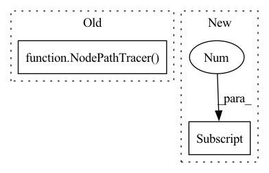

Pattern ID :5472
Before Change
if max(input_size) > MAX_FWD_SIZE:
pytest.skip("Fixed input size model > limit.")
tracer = NodePathTracer()
graph = tracer.trace(model)
model = torch.fx.GraphModule(model, graph)
inputs = torch.randn((batch_size, *input_size))After Change
tracer_kwargs={"leaf_modules": list(_leaf_modules), "autowrap_functions": list(_autowrap_functions)})
inputs = torch.randn((batch_size, *input_size))
outputs = model(inputs)[eval_nodes[-1] ]
assert outputs.shape[0] == batch_size
assert not torch.isnan(outputs).any(), "Output included NaNs"In pattern: SUPERPATTERN
Frequency: 3
Non-data size: 2
Instances Fragment ID: 19284508
Project Name: feng-lab/pytorch-image-models
Commit Name: b25ff9676848a25df5c87f489bcece89f216e749
Time: 2021-11-12
Author: alexander.soare159@gmail.com
File Name: tests/test_models.py
M Class Name: AnonimousClass
N Class Name: AnonimousClass
M Method Name: test_model_forward_fx(2)
N Method Name: test_model_forward_fx(2)
M Parent Class:
N Parent Class:
M File Name: tests/test_models.py
N File Name: tests/test_models.py
M Start Line: 308
M End Line: 320
N Start Line: 310
N End Line: 324
Before Change
model.train()
num_params = sum([x.numel() for x in model.parameters()])
tracer = NodePathTracer()
graph = tracer.trace(model)
model = torch.fx.GraphModule(model, graph)
inputs = torch.randn((batch_size, *input_size))After Change
tracer = NodePathTracer(leaf_modules=list(_leaf_modules), autowrap_functions=list(_autowrap_functions))
graph = tracer.trace(model)
graph_nodes = list(reversed(graph.nodes))
output_node_names = [n.name for n in graph_nodes[0] ._input_nodes.keys()]
graph_node_names = [n.name for n in graph_nodes]
output_node_indices = [-graph_node_names.index(node_name) for node_name in output_node_names]
train_nodes, eval_nodes = get_graph_node_names( Fragment ID: 19284509
Project Name: feng-lab/pytorch-image-models
Commit Name: b25ff9676848a25df5c87f489bcece89f216e749
Time: 2021-11-12
Author: alexander.soare159@gmail.com
File Name: tests/test_models.py
M Class Name: AnonimousClass
N Class Name: AnonimousClass
M Method Name: test_model_backward_fx(2)
N Method Name: test_model_backward_fx(2)
M Parent Class:
N Parent Class:
M File Name: tests/test_models.py
N File Name: tests/test_models.py
M Start Line: 335
M End Line: 344
N Start Line: 339
N End Line: 366
Before Change
model = create_model(model_name, pretrained=False)
model.eval()
tracer = NodePathTracer()
graph = tracer.trace(model)
model = torch.fx.GraphModule(model, graph)
model = torch.jit.script(model)After Change
tracer_kwargs={"leaf_modules": list(_leaf_modules), "autowrap_functions": list(_autowrap_functions)})
model = torch.jit.script(model)
outputs = model(torch.randn((batch_size, *input_size)))[train_nodes[-1] ]
assert outputs.shape[0] == batch_size
assert not torch.isnan(outputs).any(), "Output included NaNs" Fragment ID: 19284507
Project Name: feng-lab/pytorch-image-models
Commit Name: b25ff9676848a25df5c87f489bcece89f216e749
Time: 2021-11-12
Author: alexander.soare159@gmail.com
File Name: tests/test_models.py
M Class Name: AnonimousClass
N Class Name: AnonimousClass
M Method Name: test_model_forward_fx_torchscript(2)
N Method Name: test_model_forward_fx_torchscript(2)
M Parent Class:
N Parent Class:
M File Name: tests/test_models.py
N File Name: tests/test_models.py
M Start Line: 371
M End Line: 376
N Start Line: 398
N End Line: 409